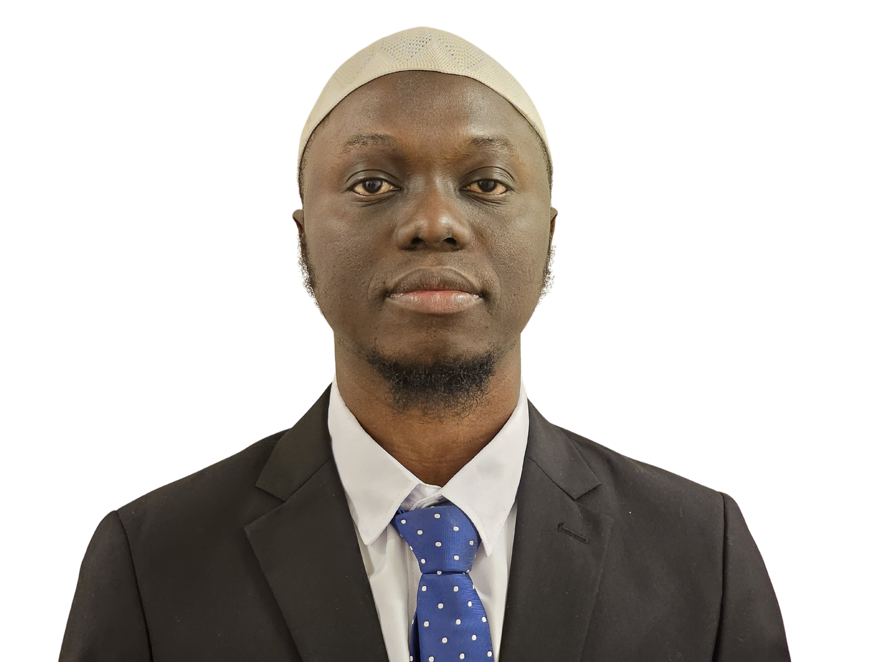

Taiwo
Ridwan
"Intelligence is only as valuable as the clarity with which it can be communicated and the precision with which it can be acted upon."
Taiwo Ridwan is a co-founder and co-director of Rankine Innovation Lab, where he shapes the intellectual and strategic direction of the lab's work at the intersection of applied artificial intelligence and sustainable development. His contribution to Rankine is rooted in a conviction that the most consequential applications of AI are not in autonomous systems operating at vast scale — but in the quiet, rigorous work of giving researchers, practitioners, and institutions better tools for understanding and acting on complex problems.
His approach is fundamentally applied and integrative: committed to frameworks that hold up in real contexts, tools that practitioners can use without specialist AI training, and research that is designed from the outset for translation and deployment rather than isolated publication. Taiwo's thinking at Rankine draws from systems design, applied machine learning, and the philosophy of scientific practice — oriented always toward what it means for knowledge to be genuinely useful rather than merely technically correct.